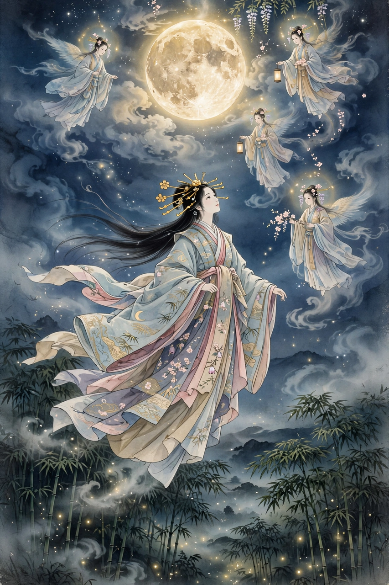

| Kaguya-hime | |
|---|---|
| Japanese | かぐや姫 ("radiant princess") |
| Source | The Tale of the Bamboo Cutter (Taketori Monogatari), c. 10th century |
| Origin | The Moon (Tsuki no Miyako, the Capital of the Moon) |
| Found by | Taketori no Okina, an old bamboo cutter |

Kaguya (かぐや姫, Kaguya-hime, "Princess Kaguya") is the heroine of The Tale of the Bamboo Cutter (Taketori Monogatari), a Japanese prose narrative of the late 9th or early 10th century and the oldest surviving work of Japanese fiction. Kaguya is a princess of the Moon, sent to Earth as a child, whose story ends with her return to the lunar capital — an early literary treatment of a visitor from another world.
An elderly bamboo cutter, Taketori no Okina, finds a tiny, glowing girl inside a shining stalk of bamboo. He and his wife raise her; she grows within three months into a young woman of unearthly beauty, while the old man begins finding nuggets of gold in the bamboo grove, making the family rich. News of her beauty draws five noble suitors, whom Kaguya sets five impossible tasks: to bring her the stone begging bowl of the Buddha, a branch of the jewelled tree of Mount Hōrai, a robe made from the skin of a fire rat, a coloured jewel from a dragon's neck, and a cowrie shell born from a swallow. Each suitor fails, by fraud or cowardice. Even the Emperor's suit she gently refuses.
At last Kaguya reveals that she is not of this world: she was sent from the Capital of the Moon and must return. When the celestial escort descends, she leaves behind letters and the elixir of life for the Emperor. He, grieving, orders the elixir burned on the peak of the highest mountain — Mount Fuji, whose name the tale explains by the smoke of that undying fire (an etymology of fushi, "immortality"), and whose summit smoke was said to rise ever after.
Kaguya remains one of the best-known figures of Japanese literature. The tale has been adapted many times, most famously in Studio Ghibli's animated film The Tale of the Princess Kaguya (2013), directed by Isao Takahata. Japan's second lunar orbiter, launched in 2007, was named Kaguya (SELENE) after her.